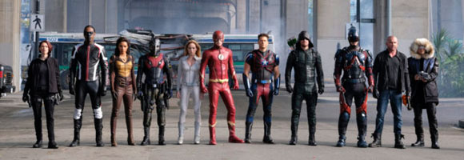

Las series de superhéroes van por más. El universo televisivo de DC se acerca a los finales de temporada de sus shows y la gente quiere saber si los héroes volverán a la acción más adelante este año. The CW cumple con sus fans y hace instantes anunció que The Flash, Arrow, Legends of Tomorrow y Supergirl fueron renovadas.